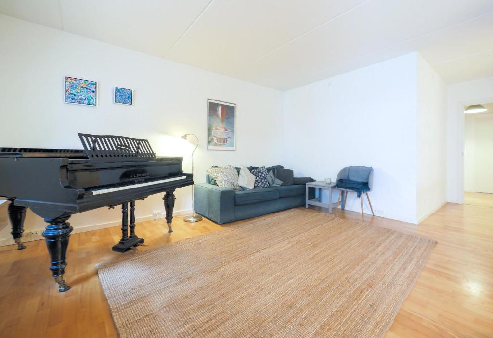
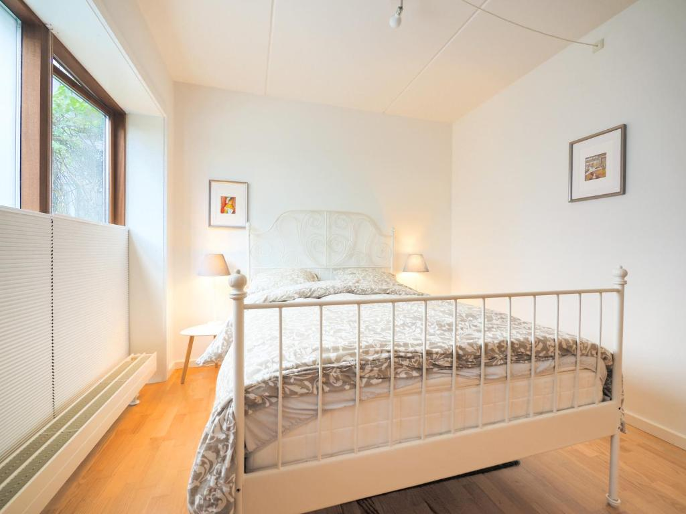
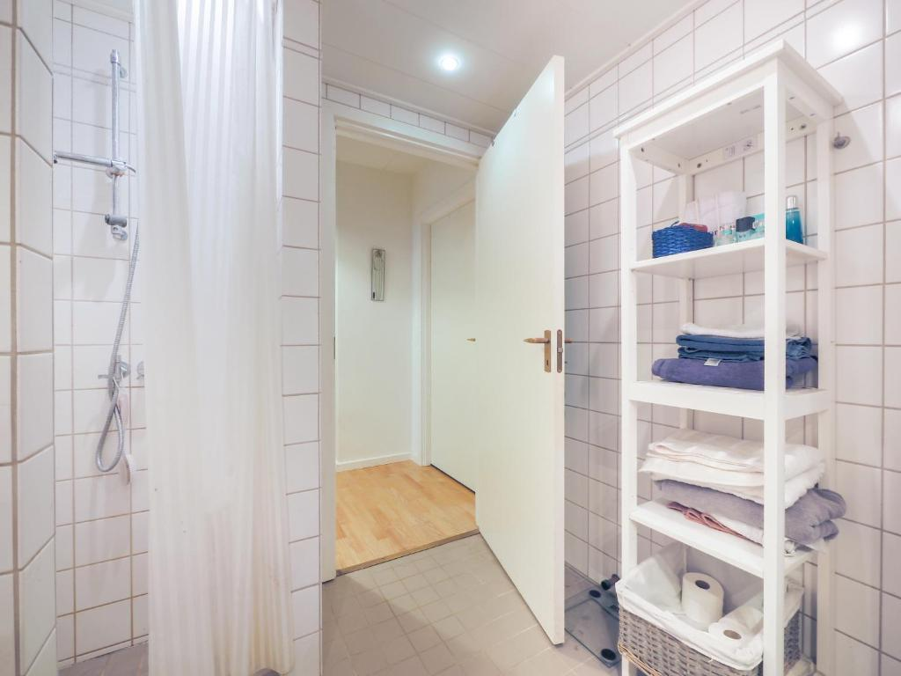
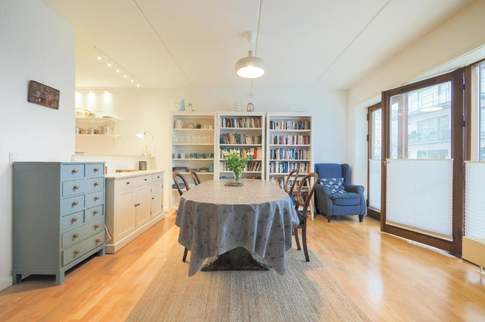
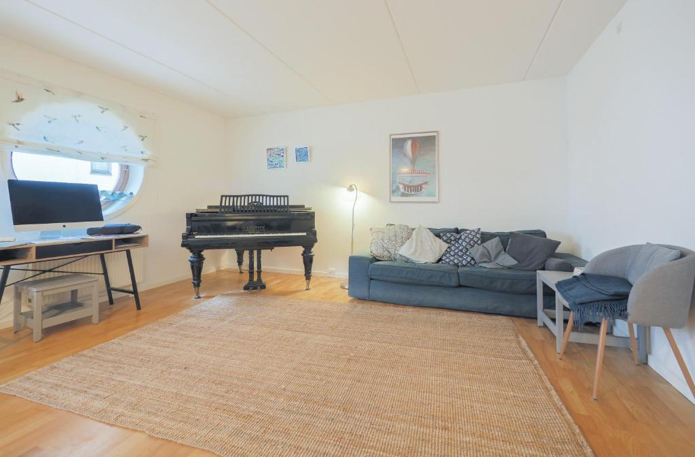
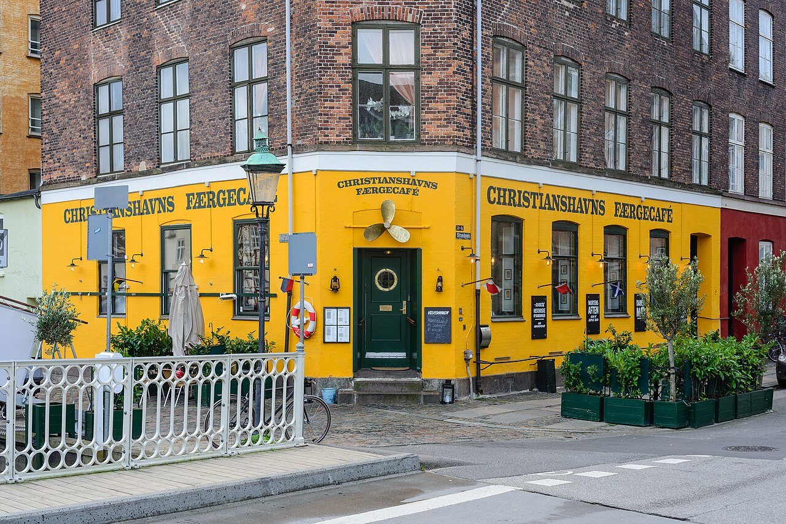
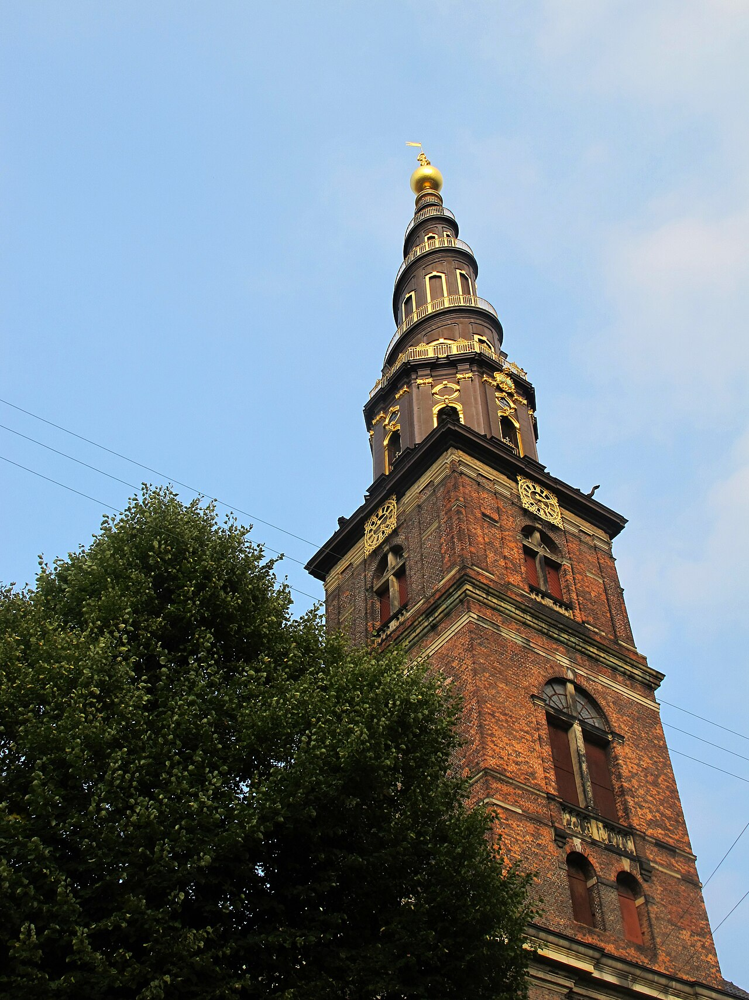
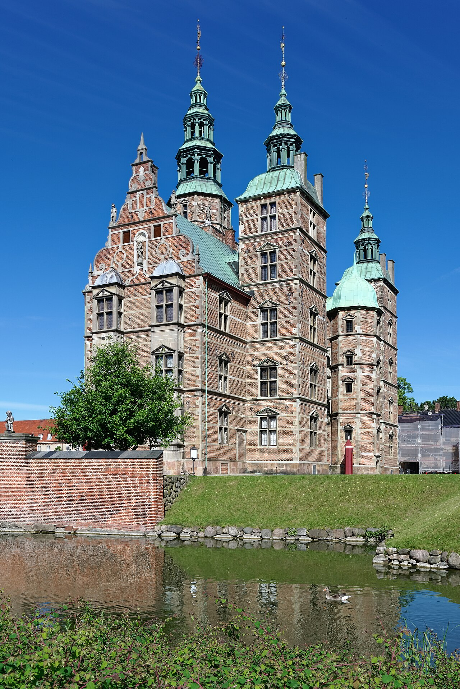
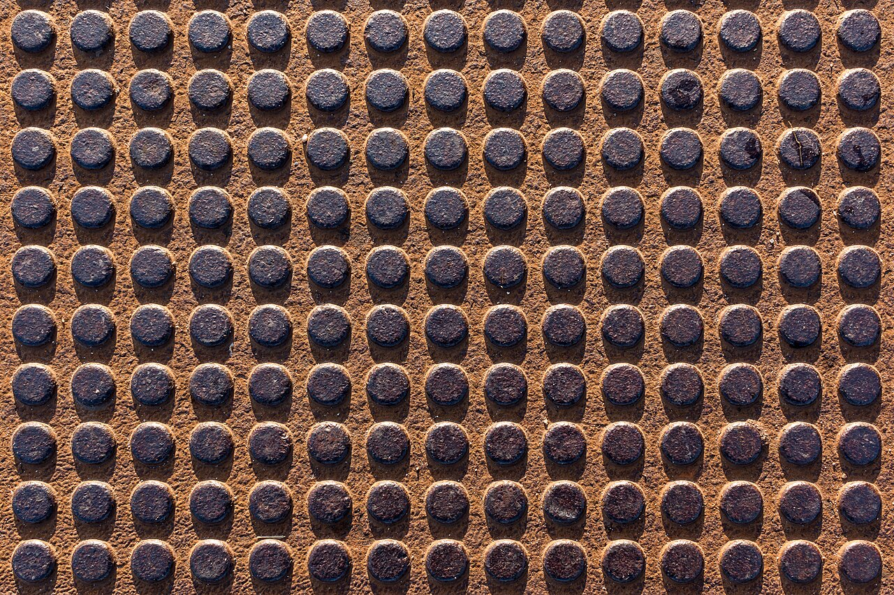
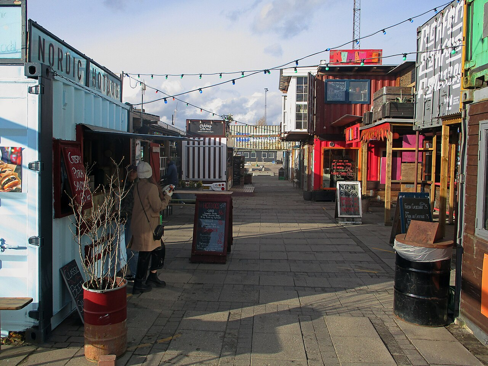

👋 Apie kelionę
Keturių dienų kelionė į Kopenhagą — karališkieji rūmai, dailės muziejai, kanalai ir gatvės maistas, baigiant Deep Purple koncertu Royal Arenoje. Keliaujame 4 žmonių grupe, automobilio nuomotis nereikia — visas miestas pasiekiamas pėsčiomis ir metro.
Maršruto apžvalga:
- 1 diena (penktadienis): atvykimas, įsikūrimas Christianshavn, Vor Frelsers Kirke bokštas, Nyhavn, Rundetårn, Torvehallerne turgus.
- 2 diena (šeštadienis): Christiania, Rosenborgo pilis, Amalienborgas, SMK dailės galerija, vakare Reffen gatvės maistas.
- 3 diena (sekmadienis): Christiansborgo pilis, Ny Carlsberg Glyptotek, Tivoli su Helovino puošyba, vakare Deep Purple koncertas Royal Arenoje.
- 4 diena (pirmadienis): Nationalmuseet, atsiskaitymas, skrydis namo į Kauną.
💡 Praktiniai patarimai kelionei
- Visa kelionė po Kopenhagą patogiai įveikiama pėsčiomis ir metro -- automobilio nuomoti nereikia, pasiimkite patogius batus, nes kasdien bus nemažai vaikščiojimo.
- Iš oro uosto į Christianshavn nakvynės vietą greičiausia -- metro M2 linija, apie 15-20 min.
- Kelias į Field's prekybos centrą ir Royal Areną eina per modernų Ørestad rajoną plačiais asfaltuotais bulvarais -- patogu ir pėsčiomis, ir metro.
- Šeštadienio vakarą (2 diena į 3 dieną ir 3 diena į 4 dieną) Kopenhagos metro M1/M2 linijos veikia visą naktį, tad po Deep Purple koncerto Royal Arenoje grįžti į nakvynės vietą Christianshavn bus paprasta net vėlai vakare.
- Naktį iš šeštadienio į sekmadienį (spalio 25-osios naktis) laikrodžiai pasukami į žiemos laiką -- naktis bus viena valanda ilgesnė, patikrinkite, ar telefonas atsinaujina automatiškai.
- Paskutinę dieną į oro uostą atvykstama apie 2,5 val. prieš skrydį -- registracijai, bagažo pridavimui ir pietums laiko pakanka.
🏠 Nakvynė
Sanders Saint-Nice 1-Bdr Apt by the Canals
Vieta: Christianshavn, prie kanalų, prie Vor Frelsers Kirke. Christianshavn metro stotis ~3 min pėsčiomis, Nyhavn/Strøget ~15 min pėsčiomis.
Talpa: 1 miegamasis su king-size lova + svetainė su sofa-lova 2 žmonėms — tinka 4 keliautojams.
Tai jau pasirinktas ir užsakytas apartamentas šiai kelionei, centriausiai įsikūręs iš visų svarstytų variantų — tiesiai Christianshavn kanalų rajone, patogu ir iki Deep Purple koncerto (metro į Royal Areną), ir iki dienos kultūros objektų (Vor Frelsers Kirke, Christiania).
⚠️ Kaina šaltiniuose skiriasi (nuo ~€107 iki ~€300+/naktį priklausomai nuo šaltinio ir valiutos) — patikrinkite tiksliai prieš kelionę.
Sanders Stay (oficiali svetainė) Tripadvisor 🔎 Booking.com: 2026-10-23–2026-10-26, 4 žm.Atsarginės alternatyvos tame pačiame Christianshavn rajone — tik jei dėl kokios priežasties pagrindinis apartamentas netiktų:
Spacious apartment on the Christianshavn canals
2A Wildersgade, Christianshavn, 1408 Copenhagen, Danija
Christianshavn rajone, netoli Vor Frelsers Kirke (Išganytojo bažnyčios) — jauki apartamentų nuoma su sodu, nemokamu WiFi ir vaizdu į kanalą.
Apartamentų aprašymas
Erdvus apgyvendinimas: „Spacious apartment on the Christianshavn canals" Kopenhagoje siūlo du miegamuosius ir vonios kambarį. Šeimos kambariuose pakanka vietos poilsiui. Moderni įranga: svečiai gali naudotis nemokamu „WiFi", pilnai įrengta virtuve, skalbimo mašina ir vaizdu į sodą. Teritorijoje yra sodas lauko veikloms. Puiki vieta: iki Kopenhagos oro uosto 6 km, nuo apartamentų pėsčiomis netoli Išganytojo bažnyčios (700 m) ir Christiansborgo pilies (1,1 km). Netoliese – Ny Carlsberg Glyptotek ir Tivoli parkas. Vietinė veikla: aplinkui galima irstytis valtimis – puiki galimybė poilsiui ir pažinimui.





Nuotraukos: Booking.com
Booking.comCanal View Copenhagen
Christianshavn — 120 m², 2 miegamieji, iki 4 žmonių, ~5 min pėsčiomis nuo Vor Frelsers Kirke, 1,6 km nuo Christiansborgo pilies, ~5 min nuo Christianshavn metro stoties.
Erdvesnis variantas, kaina nuo ~€319/naktį — gerokai virš tikėtino biudžeto, bet daugiau vietos 4 žmonėms.
Canal View Copenhagen📅 1 diena — 2026-10-23, penktadienis
Atvykimas ir Christianshavn
🌦️ Dulksna, 10–12°C, lietaus tikimybė 33%, vėjas iki 35 km/h. ⚠️ Jei vėjas/lietus trukdys, žr. Planą B žemiau.

Nuotrauka: kallerna, CC BY-SA 4.0, šaltinis

Nuotrauka: Arild Vågen, CC BY-SA 4.0, šaltinis

Nuotrauka: Acediscovery, CC BY 4.0, šaltinis

Nuotrauka: Dietmar Rabich, CC BY-SA 4.0, šaltinis

Nuotrauka: Dietmar Rabich, CC BY-SA 4.0, šaltinis

Nuotrauka: Jorge Franganillo, CC BY 2.0, šaltinis
Netoliese taip pat verta: Lagkagehuset (kepyklėlė prie nakvynės vietos, kanelsnegl nuo ~€3) ir DØP – Den Økologiske Pølsemand (ekologiška daniška dešrelė prie Nyhavn, ~€6).
🌧 Planas B (jei blogas oras)
Jautru orui: Vor Frelsers Kirke bokšto išorinis sraigtinis laiptas uždaromas stipriame vėjyje ar liūtyje, o Nyhavn pasivaikščiojimas kanalo pakrante nemalonus lietuje.
1 planas B: muziejai ir uždaros erdvės vietoj bokšto ir Nyhavn
Bendras persikėlimų laikas: ~34 min. Diena baigiasi toje pačioje vietoje kaip ir pagrindiniame plane.
🧭 Plano B maršrutas Google MapsPatarimas: BLOX (Dansk Arkitektūros centras) penktadienį dirba iki 21:00, bilieto iš anksto nereikia. Thorvaldseno muziejus veikia 10:00–17:00 (penktadienį atviras) – www.thorvaldsensmuseum.dk.
📅 2 diena — 2026-10-24, šeštadienis
Karališkoji Kopenhaga ir menas
🌦️ Dulksna, 9–11°C, lietaus tikimybė 41%, vėjas iki 43 km/h — gūsingas. ⚠️ Jei pūs stiprus vėjas, žr. Planą B žemiau.

Nuotrauka: Neptuul, CC BY-SA 4.0, šaltinis

Nuotrauka: Jakub Hałun, CC BY-SA 4.0, šaltinis

Nuotrauka: Jebulon, CC0, šaltinis

Nuotrauka: Daderot, CC0, šaltinis

Nuotrauka: Dietmar Rabich, CC BY-SA 4.0, šaltinis

Nuotrauka: Turaids, CC BY-SA 4.0, šaltinis
🌧 Planas B (jei blogas oras)
Jautru orui: Vakarinis Nyhavn pasivaikščiojimas lauke ir atviras Reffen maisto turgus nemalonūs lietuje bei vėjuotu oru; Amalienborgo kiemas taip pat lauke, tačiau bilietas apima vidinius karališkuosius apartamentus.
2 planas B: karališkieji interjerai ir dizaino muziejus vietoj Nyhavn
Bendras persikėlimų laikas: ~39 min. Diena baigiasi toje pačioje vietoje kaip ir pagrindiniame plane.
🧭 Plano B maršrutas Google MapsPatarimas: Designmuseum Danmark šeštadienį atviras 10:00–18:00. Reffen turguje rinkitės uždarą/šildomą zoną su baru ir stalo žaidimais, jei smarkiai lis – ji veikia nepaisant oro.
📅 3 diena — 2026-10-25, sekmadienis
Senamiestis, Tivoli ir Deep Purple koncertas
🌦️ Dulksna, 9–11°C, lietaus tikimybė 59%, vėjas iki 39 km/h — didelė lietaus tikimybė. ⚠️ Planas B žemiau gali būti geresnis pasirinkimas.

Nuotrauka: Moahim, CC BY-SA 4.0, šaltinis
Netoliese taip pat verta: Slotskælderen hos Gitte Kik — nuo 1910 m. veikianti nedidelė smørrebrød užeiga, ~16 €/žm. Žemėlapyje

Nuotrauka: Richard Mortel, CC BY 2.0, šaltinis

Nuotrauka: Richard Mortel, CC BY 2.0, šaltinis

Nuotrauka: Jakub Hałun, CC BY-SA 4.0, šaltinis

Nuotrauka: Leif Jørgensen, CC BY-SA 4.0, šaltinis

Nuotrauka: Jenny Andersson / News Oresund, CC BY 2.0, šaltinis
🌧 Planas B (jei blogas oras)
Jautru orui: Tivoli yra lauko pramogų parkas – daugelis atrakcionų sustabdomi stipriame vėjyje ar smarkiame lietuje, o parko alėjomis vaikščioti liūtyje nemalonu.
3 planas B: Planetariumas vietoje Tivoli
Bendras persikėlimų laikas: ~24 min. Diena baigiasi toje pačioje vietoje kaip ir pagrindiniame plane.
🧭 Plano B maršrutas Google MapsPatarimas: Tycho Brahe Planetariumas sekmadienį atviras 9:30–19:00, kupolo filmai rodomi kas valandą – bilietus patogiau pirkti iš anksto planetarium.dk, nes vietų skaičius ribotas.
📅 4 diena — 2026-10-26, pirmadienis
Nacionalinis muziejus ir skrydis namo
🌦️ Grįžus į Kauną: dulksna, 9–14°C, lietaus tikimybė 46%, vėjas iki 36 km/h.

Nuotrauka: Dietmar Rabich, CC BY-SA 4.0, šaltinis
Nuotrauka: Arild Vågen, CC BY-SA 4.0, šaltinis
Nuotrauka: kallerna, CC BY-SA 4.0, šaltinis
🗺️ Žemėlapis
🌤️ Orų prognozė
Prognozė pateikta 2026-10-18 — artėjant kelionei verta patikrinti dar kartą, kadangi detali prognozė tikslėja likus ~2 savaitėms iki kelionės.
Dulksna. Lietaus tikimybė 33%, vėjas iki 35 km/h.
Dulksna. Lietaus tikimybė 41%, vėjas iki 43 km/h.
Dulksna. Lietaus tikimybė 59%, vėjas iki 39 km/h.
Dulksna. Lietaus tikimybė 46%, vėjas iki 36 km/h.
💰 Biudžeto suvestinė
Skrydžiai (patvirtinta): KUN→CPH 09:10→09:40 ir CPH→KUN 15:15→17:45, Ryanair. 444 € už 4 suaugusius be registruoto bagažo (su 1–2 bagažais tikėtina ~584 €).
| Kategorija | Min | Tikėtina | Max |
|---|---|---|---|
| Skrydžiai | 444 € | 584 € | 700 € |
| Automobilio nuoma | 0 € | 0 € | 0 € |
| Apartamentai (3 naktys, visai grupei) | 330 € | 540 € | 900 € |
| Maistas (visai grupei) | 550 € | 650 € | 800 € |
| Bilietai į objektus + koncertas | 817 € | 924 € | 2040 € |
| Iš viso visai grupei | 2141 € | 2698 € | 4440 € |
| Vienam asmeniui | 535 € | 675 € | 1110 € |
⚠️ Didžiausias neapibrėžtumas: Deep Purple bilietų kaina (jei perkami perparduodami bilietai, galimas papildomas +~1000 € visai grupei) ir tiksli apartamento kaina šioms datoms — abu verta patikrinti/rezervuoti kuo greičiau.
ℹ️ Praktinė informacija
- Dokumentai: galiojantis pasas arba asmens tapatybės kortelė pakanka — Danija yra Šengeno erdvėje, ES piliečiams vizos nereikia, buvimas iki 90 dienų.
- Pinigai: Danijos krona (DKK), ne euras — Danija yra ES, bet ne euro zonoje. Kortelės priimamos beveik visur, net smulkioms sumoms, bet verta turėti ir grynųjų (Christianijoje bankomatų mažai, kai kurie smulkūs prekystaliai).
- Arbatpinigiai: neprivalomi — aptarnavimas įskaičiuotas į sąskaitą. Galima apvalinti arba palikti ~10% tik už išskirtinį aptarnavimą.
- Sveikata: pasiimkite Europos sveikatos draudimo kortelę (EHIC) nemokamam/sumažintam gydymui kaip ES piliečiui.
- Avarinis numeris: 112 (policija/gaisrinė/greitoji, nemokamas). Nemedicininė konsultacija: 1813.
- Viešasis transportas: bilietus pirkite „Rejsebillet" programėlėje (keičia seną DOT Billetter programėlę) arba stoties automate. Jei planuojate daug mokamų objektų per dieną, apsvarstykite Copenhagen Card.
- Papročiai: danai vertina punktualumą, eiliškumą ir asmeninę erdvę — „hygge" kultūra, santūri ir be pretenzijų. Dviračių takai (cykelsti) rimti – niekada nevaikščiokite jais, turistai gali būti apibarti ar net partrenkti.
- Saugumas: Kopenhaga apskritai labai saugi, įprastos miesto atsargumo priemonės (saugokite daiktus Nyhavn/Strøget turistinėse zonose). Christiania saugi dienos metu, vengti po tamsos, laikytis bendruomenės taisyklių (nebėgioti, nefotografuoti Pusher Street zonoje).
📋 Praktinė informacija kelionei
- Skrydis ten
- KUN→CPH, 2026-10-23, 09:10→09:40, Ryanair FR6156
- Skrydis atgal
- CPH→KUN, 2026-10-26, 15:15→17:45, Ryanair FR6155
- Automobilio nuoma
- Nereikalinga šiai kelionei
- Nakvynės kontaktas
- Susisiekti per Sanders Stay / Booking.com žinutes: ____
- Kelionės vadovas / kontaktinis asmuo
- ____
- Namuose liekantis kontaktas
- ____
🎒 Ką pasiimti
- Visos 4 dienos su lietaus tikimybe (33–59 %) ir vėju iki 43 km/h – rinktis striukę su gobtuvu, ne vien skėtį.
- Vor Frelsers Kirke bokšto lauko laiptai uždaromi esant stipriam vėjui ar lietui – turėkite atsarginį vidaus planą (SMK, Glyptotek, Nationalmuseet).
- Naktį iš spalio 25 į 26 d. Danijoje sukami laikrodžiai į žiemos laiką – patikrinkite, ar skrydžio laikas telefone atsinaujino teisingai.
- Skysčiai rankiniame bagaže – talpyklos iki 100 ml, visos viename skaidriame 1 l maišelyje.
- Jokių peilių ar daugiafunkcių įrankių rankiniame bagaže.
Dokumentai ir pinigai
Drabužiai
Avalynė
Elektronika
Higiena ir vaistinėlė
Kelionės priedai
🍽️ Kur pavalgyti
1 diena
2 diena
3 diena
4 diena
🍸 Barai
🍴 Ką paragauti

Griežinėlis ruginės duonos su sviestu ir gausiu priedu viršuje – silke, kepta žuvimi, roast bifu ar kiaušiniu su krevetėmis. Danijos vidurdienio klasika.
Kaina: 8–18 €. Kur paragauti: Restaurant Schønnemann, Slotskælderen hos Gitte Kik, Torvehallerne – Hallernes Smørrebrød.
Nuotrauka: Kritzolina, CC BY-SA 4.0, šaltinis

Kiaulienos ir jautienos faršo kotletai, kepti keptuvėje, patiekiami su virtomis bulvėmis ir raudonaisiais kopūstais arba ant ruginės duonos. Namų virtuvės klasika.
Kaina: 12–18 €. Kur paragauti: Café Wilder, Slotskælderen hos Gitte Kik.
Nuotrauka: cyclonebill, CC BY-SA 2.0, šaltinis

Danijos nacionaliniu patiekalu vadinamas traškiai keptas kiaulienos lašinys su kreminiu petražolių padažu ir virtomis bulvėmis.
Kaina: 12–17 €. Kur paragauti: Restaurant Schønnemann, Slotskælderen hos Gitte Kik.
Nuotrauka: XYZA-2400, CC0, šaltinis

Apvalūs, blynams panašūs kepiniai, kepami specialioje keptuvėje su duobutėmis, viduje dažnai su obuolių gabalėliu, barstomi cukraus pudra. Rudenį – įprastas mugių/turgaus skanėstas.
Kaina: 5–9 €. Kur paragauti: Torvehallerne – Hallernes Smørrebrød.
Nuotrauka: JoachimK, Public domain, šaltinis

Minkšta mielinė sraigė su cinamonu ir sviestu – viena populiariausių danų kepyklos gėrybių, puikus pusryčių ar užkandžio pasirinkimas.
Kaina: 3–6 €. Kur paragauti: Lagkagehuset (Christianshavn), Meyers Bageri (Christianshavn).
Nuotrauka: Andy Li, CC0, šaltinis
Raudona virta dešrelė iš gatvės dešrelių vagonėlio (pølsevogn), patiekiama bandelėje arba lėkštelėje su garstyčiomis, kečupu ir svogūnais – ikoniškas Kopenhagos gatvės maistas.
Kaina: 5–8 €. Kur paragauti: DØP – Den Økologiske Pølsemand.